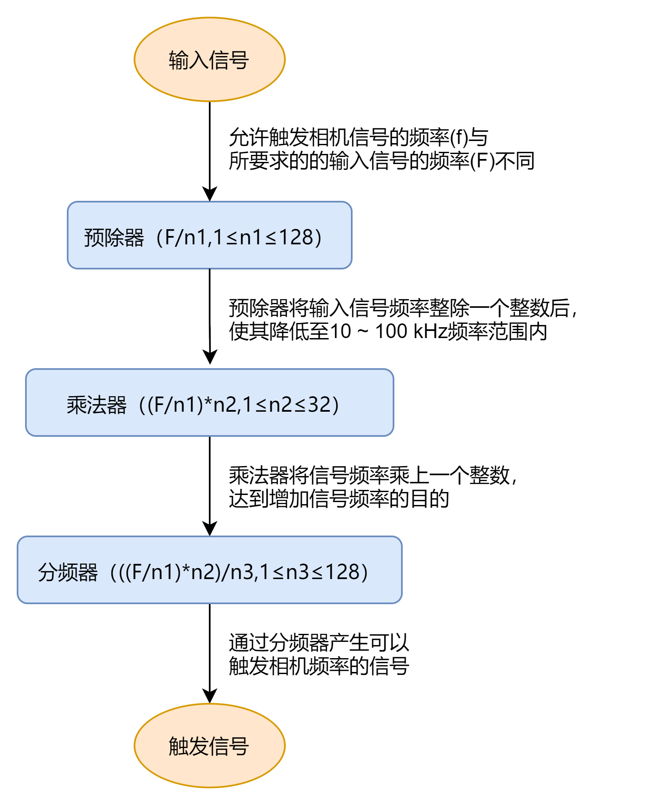

线阵相机帧触发或行触发开启时，可将硬件触发信号或轴编码器控制信号频率通过相机的频率转换模块转换为相机所需要的帧触发或行触发信号频率，从而进行触发，处理流程如下图所示。

图 1 频率转换流程图选择频率转换的信号源，可选线路0/1/3、编码器模块输出、CC1/2/3/4、N/A。
N/A表示未选择频率转换的信号源。
输入的源信号最先进行预分频器处理，通过设置的整数整除，达到降低源信号频率的目的，并将处理后的信号送到乘法器。
频率超过 100kHz 的信号必须要经过预分频器降低频率，因为乘法器只能接受 10~100kHz 频率范围内的信号。来自编码器信号的周期性抖动可被接受。
乘法器将预分频器处理的信号频率乘以设置的整数，达到增加信号频率的目的，并将信号送到分频器。
乘法器处理后的信号被送到后分频器，后分频器将该信号通过设置的整数整除，降低信号频率，并将产生的信号作为相机的最终触发信号。